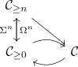
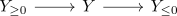

upper truncation of a t-structure
Definition
Let $\mathcal{C}$ be a stable infinity category equipped with a t-structure $(\mathcal{C}_{\geq 0}, \mathcal{C}_{\leq 0})$ Then the upper truncation is defined as right adjoint $\tau_{\geq 0}: \mathcal{C} \rightarrow \mathcal{C}_{\geq 0}$ to the inclusion $\mathcal{C}_{\geq 0} \rightarrow \mathcal{C}$.
For $n \in \mathbb{N}$ define the adjunction via the equivalence

note that:
- suspension as equivalence in a stable category
- the functor is by definition of $\mathcal{C}_{\geq n}$ essentially surjective (and fully faithful)
explicit pointwise description
for any object $X$ choose a fiber sequence

and map $X$ to $X_{\geq 0}$
Existence
using pointwise construction of right adjoints:
Let $X \in \mathcal{C}_{\geq 0}$ and $Y \in \mathcal{C}$. Choose a bifiber sequence

where $Y_{\geq 0} \in \mathcal{C}_{\geq 0}, Y_{\leq 0} \in \mathcal{C}_{\leq 0}$
Then the mapping spectrum functor is exact, hence we get a fiber sequence
Thus apply equivalence and trivial fiber sequence in a stable category to conclude that the first map is an equivalence
Hence we have constructed $\tau_{\geq 0}(Y) \coloneqq Y_{\geq 0}$